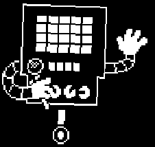

HOME/ |
FRISK/ |
BOSSES/ |
AÇÕES/ |
CRIADOR |

METTATON
Mettaton é um robô criado por Alphys para entreter os monstros do Subsolo. Carismático e extravagante, ele apresenta programas de TV e desafia Frisk em diversas situações. No fim, revela seu desejo de se tornar uma estrela na superfície, mas acaba reconhecendo o valor de seus amigos e decide permanecer no Subsolo.
TEMA DA BATALHA
VOLTAR


História detalhada
Mettaton é um robô criado pela cientista real Alphys. Seu projeto original era servir como uma máquina de entretenimento para alegrar a vida dos monstros aprisionados no Subsolo. Com o passar do tempo, ele se tornou uma verdadeira celebridade, apresentando programas de televisão, musicais, concursos de perguntas, programas de culinária e diversos outros espetáculos. Sua personalidade extravagante, confiante e dramática fez dele um dos personagens mais famosos entre os monstros.
Durante a jornada de Frisk pela região de Hotland e pelo CORE, Mettaton aparece diversas vezes para desafiar o humano. Em vez de simplesmente atacar, ele transforma quase todos os encontros em grandes apresentações para o público, fazendo questão de manter a audiência entretida. Muitos desses eventos foram planejados por Alphys, que secretamente ajudava Frisk a superar cada obstáculo. Mesmo assim, Mettaton sempre faz de tudo para parecer a verdadeira estrela do espetáculo.
Em determinado momento, Mettaton revela sua forma EX, um corpo muito mais elegante, poderoso e humanoide. Essa transformação havia sido desenvolvida por Alphys para que ele pudesse realizar seu maior sonho: atravessar a barreira e conquistar fama também entre os humanos da superfície. Acreditando que seria ainda mais admirado no mundo exterior, ele decide enfrentar Frisk em uma grande batalha televisionada diante de todos os monstros do Subsolo.
Durante esse confronto, Mettaton demonstra que, por trás de toda a vaidade e desejo por fama, existe alguém que apenas queria ser reconhecido e amado pelo público. Dependendo das escolhas do jogador, ele percebe que já possui inúmeros fãs no Subsolo e que não precisa abandonar seus amigos para alcançar a felicidade. Esse momento representa um importante amadurecimento para o personagem.
Na Rota Pacifista, Mettaton sobrevive aos acontecimentos da aventura e continua sua carreira como a maior estrela do entretenimento dos monstros. Após a destruição da barreira, ele pode finalmente conhecer a superfície, onde continua realizando apresentações e conquistando novos admiradores. Seu carisma, talento e personalidade exagerada fazem dele um dos personagens mais memoráveis de Undertale.